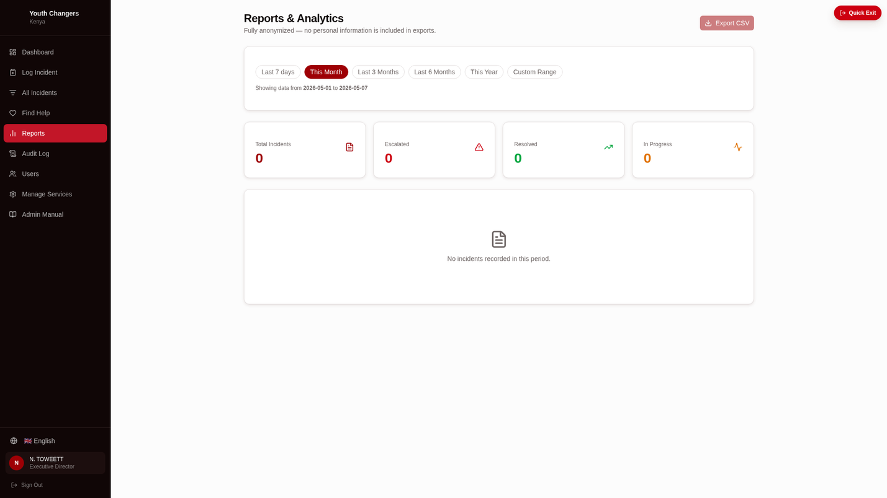
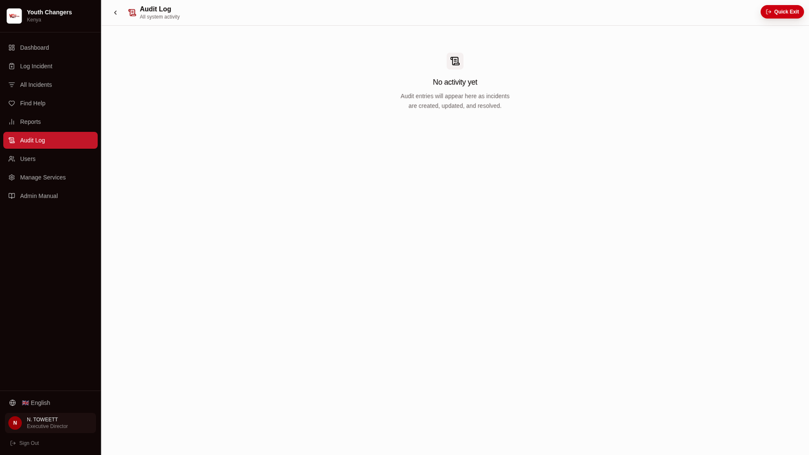
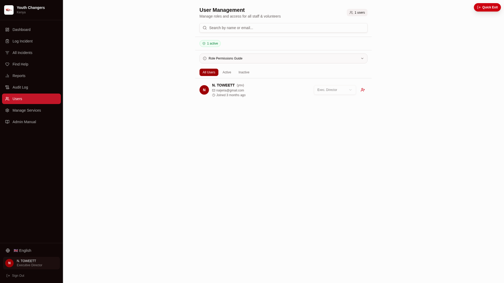
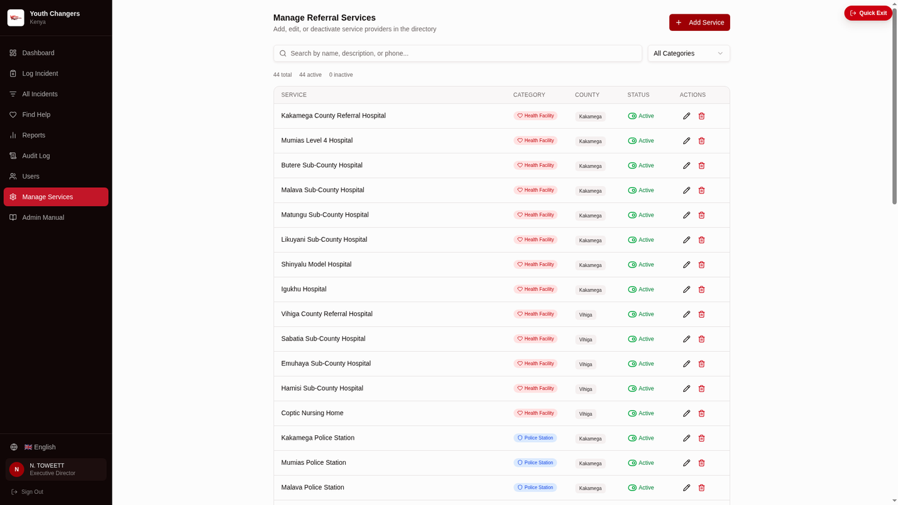

YCK Incident Tracker
Interactive User Journey Guide
1. Landing Page
Survivors land on a calming page with "Protect Survivors. Empower Responders."

💡 Survivor View
Dark gradient hero, "Report an Incident" CTA, language switcher (EN/SW), Quick Exit button top-right.
2. Safety Gate
Mandatory consent screen before accessing the reporting form.

🔒 Trauma-Informed
"Your Safety Matters" warning, consent checkbox, Continue/Leave options.
3. Incident Report Form
4-step wizard with large tap-friendly icon cards for incident types.

📝 10 Incident Types
Physical, Sexual, Emotional, Neglect, Bullying, Domestic Violence, Child Exploitation, etc.
4. Submission Success
Confirmation with checkmark and confidentiality assurance.

✅ Anonymous
Survivors get a reference code (e.g., NT111974) but no PII is collected.


Safety & Privacy Features
Quick Exit
Persistent button clears session, redirects to Google
Safety Gate
Consent checkbox before reporting form
Anonymous
No PII required for incident reporting
⚠️ Safety Note: The Quick Exit button appears on ALL pages and immediately clears sessionStorage before redirecting.
Offline-First PWA
Works Without Internet
Submit incidents offline → Queue in localStorage → Auto-sync when connected
🌍 Critical for Kenya
Low-connectivity areas can still report incidents. Data syncs when back online.